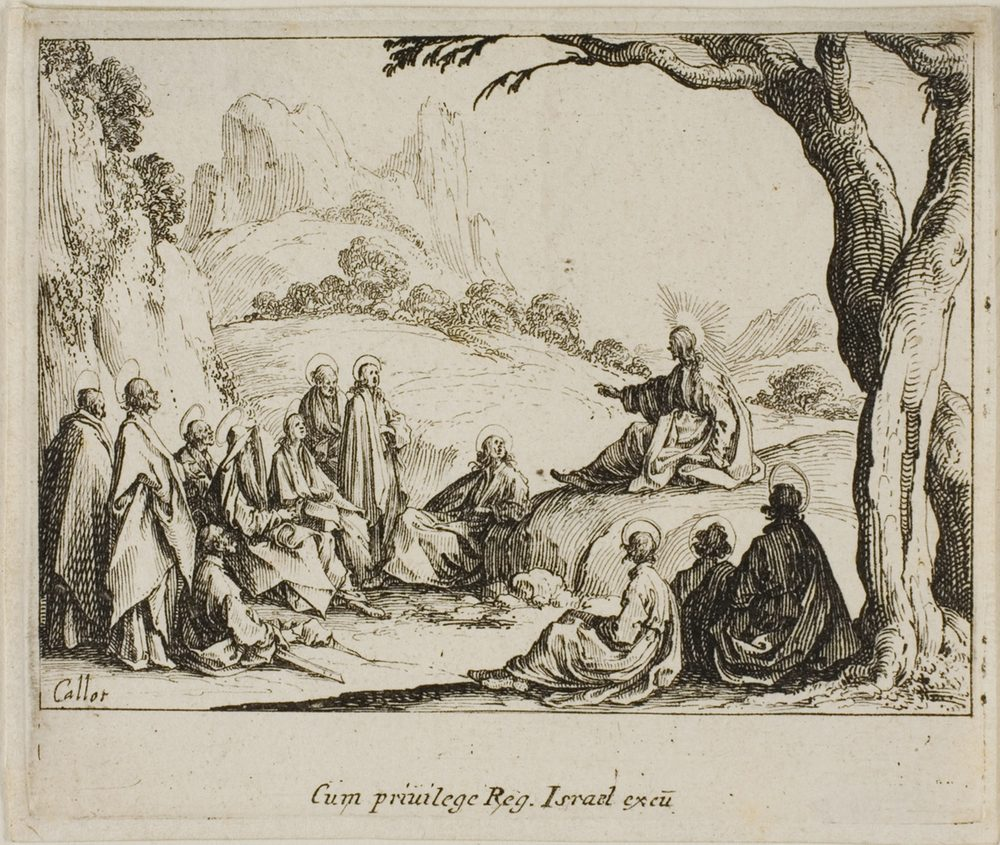
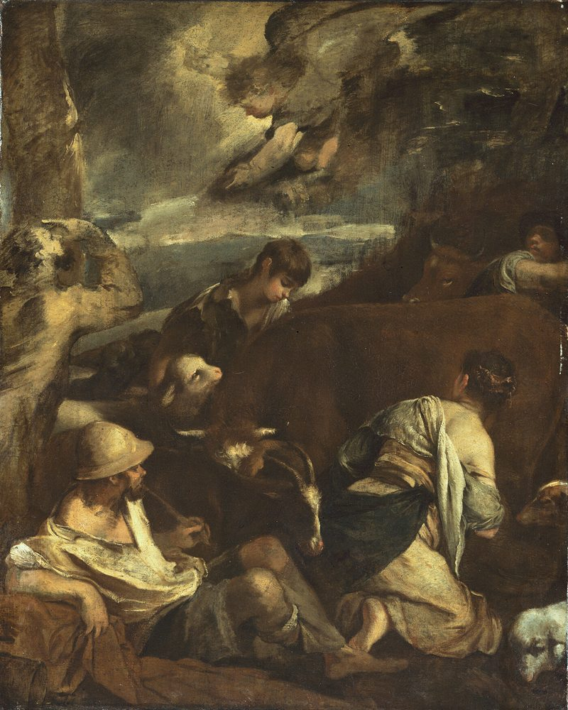
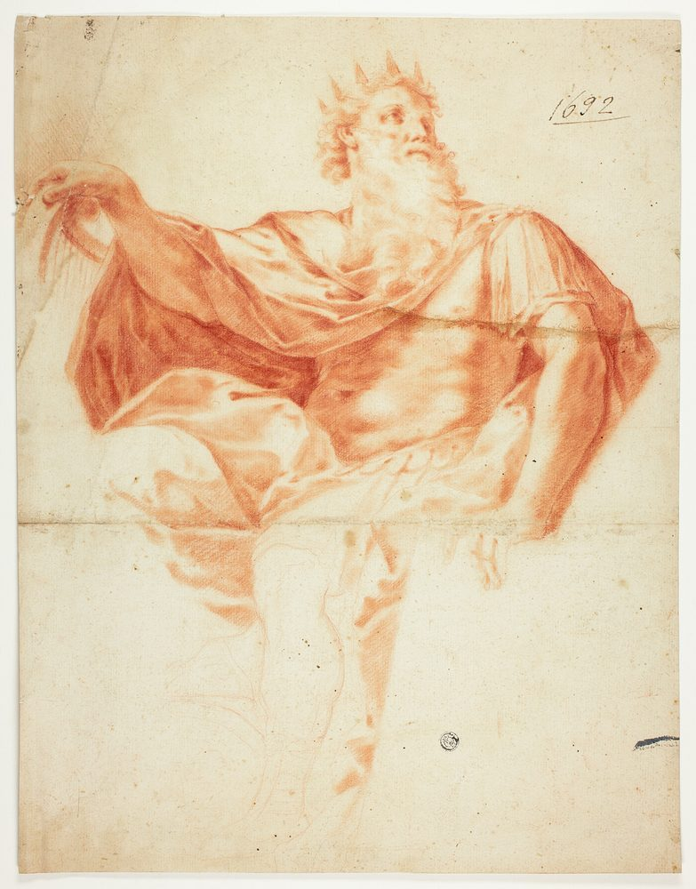
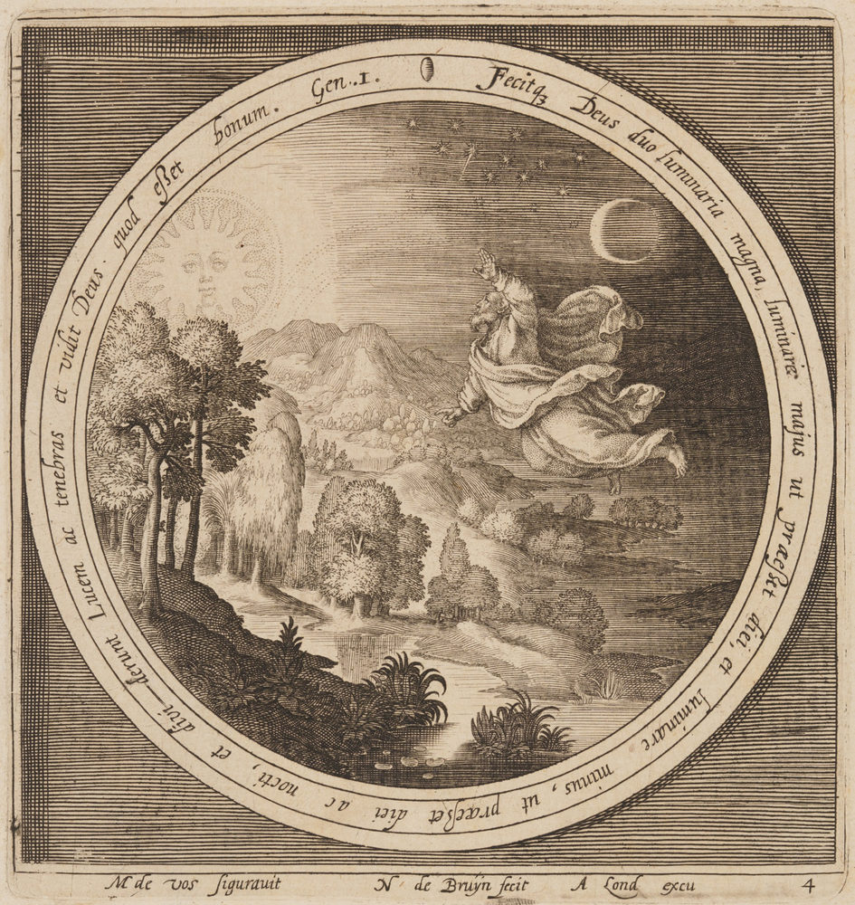
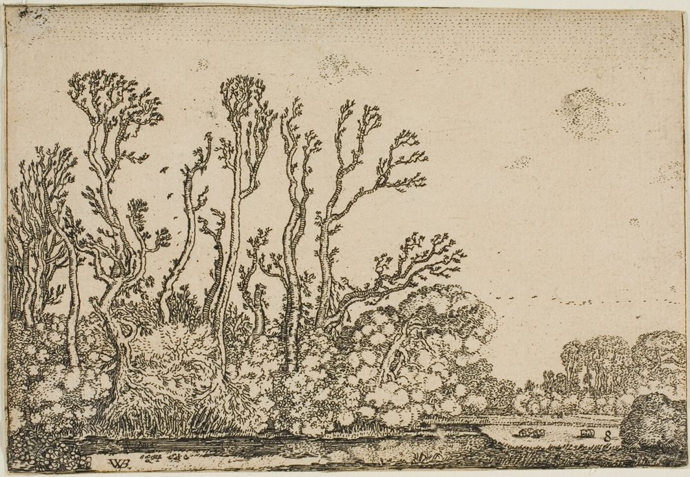

The Kingdom
Jesus is King
He is not a distant teacher and not a figure from a history book. He reigns now, over every nation, every power, and every heart — and he reigns because the Father's right to rule belongs to him as his own.
King of kings, and Lord of lords
The title is not an honorific. It is a name, and it is written on him — on the thigh, in the view of every executioner who ever lifted a sword against him. Men have crowned him with thorns and called it a joke; the Romans were right about the method and entirely wrong about the outcome.
“And he hath on [his] vesture and on his thigh a name written, KING OF KINGS, AND LORD OF LORDS.”
Revelation 19:16
“who] [is] the blessed and only Potentate, the King of kings, and Lord of lords.”
1 Timothy 6:15
“And he said unto me, Thou must prophesy again before many peoples, and nations, and tongues, and kings.”
Revelation 10:11
The title is not an honorific; it is a name, and it is written on his thigh. Nor is it borrowed authority. He made all things, and what a man makes he owns.
He made all things
This is where his right to rule comes from, and it is not politics. His claim is the Maker's claim. Everything that has a throne has it because he permitted the throne; every power that exists was authorised by him or is already under his judgment. The empire is his, and so is the desk it was written on.
“All things were made by him; and without him was not any thing made that was made.”
John 1:3
“By the word of the LORD were the heavens made; and all the host of them by the breath of his mouth.”
Psalm 33:6
“The earth is the Lord’s, and the fulness thereof; the world, and they that dwell therein.”
Psalm 24:1
Everything that has a throne has it because he permitted it — and the throne he permitted is not one among many. It is an everlasting kingdom, and every other is only a shadow of it.
An everlasting kingdom
Most thrones are lost within a lifetime — by death, by invasion, or by their own successors. This one does not end, cannot be destroyed, and will not be inherited by anyone else. Every empire that has declared him dead has been the one that died.
“The Lord God shall give unto him the throne of his father David: And he shall reign over the house of Jacob for ever; and of his kingdom there shall be no end.”
Luke 1:32–33
“His name shall endure for ever: his name shall be continued as long as the sun: and [men] shall be blessed in him: all nations shall call him blessed.”
Psalm 72:17
Most thrones are lost inside a lifetime, by death, by invasion, or by their own successors. This one does not end, and will not be inherited by anyone else; and on the day of its showing, every knee shall bow.
Every knee shall bow
The whole creation will acknowledge him — not because it was made to, but because it was made by him, and the truth of it stands whether or not anyone admits it. Heaven, earth, and hell. Angels and men. The believer and the man who only ever heard about it.
“That at the name of Jesus every knee should bow, of [things] in heaven, and [things] in earth, and [things] under the earth; And [that] every tongue should confess that Jesus Christ [is] Lord, to the glory of God the Father.”
Philippians 2:10–11
“For it is written, [As] I live, saith the Lord, every knee shall bow to me, and every tongue shall confess to God.”
Romans 14:11
Heaven, earth, and hell will acknowledge him, whether or not anyone admits it. Until they do, we pray as though it had not happened and we preach as though it had: thy kingdom come.
Thy kingdom come

His kingdom is both promised and present. It is prayed for this morning as though it were not yet here, because it is not fully here — and it is preached with confidence this morning, because its King already is. The day is named in the Bible, and we are not guessing at it.
“Thy kingdom come. Thy will be done in earth, as [it] [is] in heaven.”
Matthew 6:10
“And the seventh angel sounded; and there were great voices in heaven, saying, The kingdoms of this world are become [the] [kingdoms] of our Lord, and of his Christ; and he shall reign for ever and ever.”
Revelation 11:15
“And the LORD shall be king over all the earth: in that day shall there be one LORD, and his name one.”
Zechariah 14:9
“Every valley shall be exalted, and every mountain and hill shall be made low: and the crooked shall be made straight, and the rough places plain:”
Isaiah 40:4
One Lord, one King — and his name one. And the kingdom we pray for is not a bare hope; it is the reign of a King who can only be described one way: born a King.
Born a King

He was not made king by a council, a crowd, or a military committee. He was announced to shepherds in the city of David before he could speak, and when a governor asked him outright whether he was a king he did not deny it. He was born a King and he died like a criminal, and neither fact cost him the throne.
“For unto you is born this day in the city of David a Saviour, which is Christ the Lord.”
Luke 2:11
“Jesus answered, Thou sayest that I am a king. To this end was I born, and for this cause came I into the world, that I should bear witness unto the truth. Every one that is of the truth heareth my voice.”
John 18:37
“Jesus answered, My kingdom is not of this world: if my kingdom were of this world, then would my servants fight, that I should not be delivered to the Jews: but now is my kingdom not from hence.”
John 18:36
Announced to shepherds before he could speak, and executed as a criminal — and the throne never moved. God set this king on his own hill, the King in Zion.
The King in Zion

God set this king on his own hill. Nothing earthly seized the throne and nothing earthly can remove him from it. What other kings have taken by the sword, the Father gave to his Son as an inheritance — and gave it, which is the difference between a conqueror and a Father.
“Yet have I set my king upon my holy hill of Zion.”
Psalm 2:6
“Ask of me, and I shall give [thee] the heathen [for] thine inheritance, and the uttermost parts of the earth [for] thy possession.”
Psalm 2:8
“Blessed [is] the man whom thou chastenest, O LORD, and teachest him out of thy law.”
Psalm 94:12
The hill is his, and the giving was a Father’s and not a conqueror’s. What he reigns with is not force and not an army; it is a King who reigns in righteousness.
A King who reigns in righteousness
His government is unlike any other on earth, because it is the only one that costs him nothing. No army upholds it and no tax funds it. Judgment and salvation meet together at his right hand, and the law he gives is not a restraint on his subjects — it is the shape of the world he made, and it is what being made in his image actually means.
“Behold, a king shall reign in righteousness, and princes shall rule in judgment.”
Isaiah 32:1
“Say among the heathen [that] the LORD reigneth: the world also shall be established that it shall not be moved: he shall judge the people righteously.”
Psalm 96:10
“But with righteousness shall he judge the poor, and reprove with equity for the meek of the earth: and he shall smite the earth with the rod of his mouth, and with the breath of his lips shall he slay the wicked.”
Isaiah 11:4
No army upholds his government and no tax funds it. And long before he came, heaven wrote him down — foretold of old, in words that no later hand could quietly alter.
Foretold of old
And he who made the world can speak of it before it is finished. The prophets saw his coming long before it came to pass — a child given without a father in the plan of men, a ruler out of a town nobody had ever heard of, a King riding into a city on a donkey. Heaven kept its promise to the letter, and men wrote it down centuries early so that no later hand could quietly alter it.
“For unto us a child is born, unto us a son is given: and the government shall be upon his shoulder: and his name shall be called Wonderful, Counsellor, The mighty God, The everlasting Father, The Prince of Peace.”
Isaiah 9:6
“Of the increase of [his] government and peace [there] [shall] [be] no end… The zeal of the LORD of hosts will perform this.”
Isaiah 9:7
“But thou, Beth–lehem Ephratah, [though] thou be little among the thousands of Judah, [yet] out of thee shall he come forth unto me [that] [is] to be ruler in Israel; whose goings forth [have] [been] from of old, from everlasting.”
Micah 5:2
“Behold, a virgin shall conceive, and bear a son, and shall call his name Immanuel.”
Isaiah 7:14
A child given without a father in the plan of men, a King riding into a city on a donkey, a town nobody had ever heard of. It was written first, and it was fulfilled to the letter.
Proofs from prophecy
And it was fulfilled to the letter
Here is the record set out plainly, so that nobody has to take our word for it. The prophets described the King in remarkable detail — the enmity he would defeat, the family he would come from, the town of his birth, the manner of his coming, his suffering, and his reign. The record of the gospel answers to each one like a key to its lock, and no one had to edit the key afterwards.
“And I will put enmity between thee and the woman, and between thy seed and her seed; it shall bruise thy head, and thou shalt bruise his heel.”
Genesis 3:15 — fulfilled in Galatians 4:4
“The sceptre shall not depart from Judah, nor a lawgiver from between his feet, until Shiloh come; and unto him [shall] the gathering of the people [be].”
Genesis 49:10 — fulfilled in Hebrews 7:14
“I gave my back to the smiters, and my cheeks to them that plucked off the hair: I hid not my face from shame and spitting.”
Isaiah 50:6 — fulfilled in Matthew 26:67
“He was oppressed, and he was afflicted, yet he opened not his mouth: he is brought as a lamb to the slaughter, and as a sheep before her shearers is dumb, so he openeth not his mouth.”
Isaiah 53:7 — fulfilled in Matthew 27:12–14
“They pierced my hands and my feet.”
Psalm 22:16 — fulfilled in John 19:36–37
“They part my garments among them, and cast lots upon my vesture.”
Psalm 22:18 — fulfilled in Matthew 27:35
“They gave me also gall for my meat; and in my thirst they gave me vinegar to drink.”
Psalm 69:21 — fulfilled in Matthew 27:34
“For thou wilt not leave my soul in hell; neither wilt thou suffer thine Holy One to see corruption.”
Psalm 16:10 — fulfilled in Acts 2:31
“The stone [which] the builders refused is become the head [stone] of the corner.”
Psalm 118:22 — fulfilled in Matthew 21:42
“Behold, thy King cometh unto thee: he [is] just, and having salvation; lowly, and riding upon an ass, and upon a colt the foal of an ass.”
Zechariah 9:9 — fulfilled in Matthew 21:4–5
“They shall look upon me whom they have pierced.”
Zechariah 12:10 — fulfilled in John 19:37
“I will raise unto David a righteous Branch, and a King shall reign and prosper, and shall execute judgment and justice in the earth.”
Jeremiah 23:5 — fulfilled in Luke 1:32–33
Prophecy written centuries beforehand, fulfilled to the letter. A record that exact is a seal — and the seal he has set upon his own people is this: the seventh day is his, and it is signed.
The seal upon his people
The seventh day is his, and it is signed

Six days the LORD made, and then he stopped. That is not a preference and it is not a suggestion: he rested on the seventh day and he blessed it and he sanctified it. It is a day, and a holy one, and he has never set apart another day in its place. The seventh day is the sabbath, and it was hallowed before any law was spoken aloud at Sinai — so the seal is his from the beginning, not a custom that grew up among believers afterwards.
“And God blessed the seventh day, and sanctified it: because that in it he had rested from all his work which God created and made.”
Genesis 2:3
“For [in] six days the LORD made heaven and earth, the sea, and all that in them [is], and rested the seventh day: wherefore the LORD blessed the sabbath day, and hallowed it.”
Exodus 20:11
“Verily my sabbaths ye shall keep: for it [is] a sign between me and you throughout your generations; that [ye] may know that I [am] the LORD that doth sanctify you.”
Exodus 31:13
“Moreover also I gave them my sabbaths, to be a sign between me and them, that they might know that I [am] the LORD that sanctify them.”
Ezekiel 20:12
“And hallow my sabbaths; and they shall be a sign between me and you, that ye may know that I [am] the LORD your God.”
Ezekiel 20:20
There it is, three times over and in his own words: the sabbath is a sign between him and them, given to them so that men might know that he is the LORD. A seal is not a decoration. It is put on deliberately, by someone with authority, so that what it is attached to can be recognised — and this one is attached to the people of the LORD and to nothing else. The King holds the authority that gives the seal its force, and he says plainly that he is Lord of the sabbath.
And it does not move. He is the God who does not change, and what he set between himself and his people he has not since withdrawn. Nothing in heaven or in earth has put another day in its place, because there never was another day in its place. The sabbath was hallowed at the beginning, and it stands hallowed now, as it will stand.
“For I [am] the LORD, I change not; therefore ye sons of Jacob are not consumed.”
Malachi 3:6
Now set that against the other claim. The world has taken the first day of the week and made it the mark instead, and calls the keeping of it a sign of faithfulness. But no text gives it to them. There is not one verse that calls the first day the sabbath, and there is not one verse that gives the first day to God's people as a seal. They have taken a day the King never sanctified and have put his name upon it. We will not give up the day he did.
“The sabbath was made for man, and not man for the sabbath: therefore the Son of man is Lord also of the sabbath.”
Mark 2:27–28
“[If] thou turn away thy foot from the sabbath… and call the sabbath a delight, the holy of the LORD, honourable; and shalt honour him, not doing thine own ways, nor finding thine own pleasure, nor speaking [thine] [own] words:”
Isaiah 58:13
And this is not a small thing that has been moved. It is an attack upon the authority itself, and it is the oldest attack there is: he is the one who would think to change times and laws, who speaks against the most High and wears out his saints. And it is written of him in the very next breath that he cannot finish it. He was given his hand for a time and times and the dividing of time; the judgment sat, and his dominion was taken away from him. He may move a great deal in this world. He cannot move a day that God sanctified.
“And he shall speak [great] words against the most High, and shall wear out the saints of the most High, and think to change times and laws: and they shall be given into his hand until a time and times and the dividing of time.”
Daniel 7:25
“But the judgment shall sit, and they shall take away his dominion, to consume and to destroy [it] unto the end.”
Daniel 7:26
The conclusion of the matter
Scripture has a name for the day, and the name is the Lord's day. There is no second day in the Word and no warrant anywhere for one, so the rest he left for his people is the rest that he named. A day is a day: he rested on it, he blessed it, he sanctified it, and there it stands. The attempt to move it is the attempt he has always made, and it is the attempt that ends in laughter.
“I was in the Spirit on the Lord's day, and heard behind me a great voice, as of a trumpet,”
Revelation 1:10
“He that sitteth in the heavens shall laugh: the Lord shall have them in derision.”
Psalm 2:4
“There remaineth therefore a rest to the people of God.”
Hebrews 4:9
So we rest on the seventh day: because he set it apart at the beginning, and because no power in heaven or upon earth can move it. A few texts record the disciples meeting upon the first day of the week (Acts 20:7; 1 Corinthians 16:2). That is a record of what men did, and not a grant of a day to anyone, and it is no warrant for the first. We have not appointed ourselves the keepers of anybody else's Sabbaths, and a day kept in good faith is not ours to judge any man over. We would rather be in the company of those who kept it and still were not his, than out of it.
The seventh day, kept as the Lord’s day, on the authority of the words themselves. We will answer for our own keeping of it before him — and the One we keep it for is worthy is the Lamb.
Worthy is the Lamb

This King is also the Lamb who was slain, and the slaying was not his defeat. It was the battle in which death itself was routed. He did not have his life taken from him; he laid it down and took it again, and in rising he was declared to be the Son of God with power. Every other king is ended by death. This one holds the keys of it — and heaven does not sing that he suffered. Heaven sings that he conquered.
“No man taketh it from me, but I lay it down of myself. I have power to lay it down, and I have power to take it again.”
John 10:18
“And declared [to] [be] the Son of God with power, according to the spirit of holiness, by the resurrection from the dead:”
Romans 1:4
“And being found in fashion as a man, he humbled himself, and became obedient unto death, even the death of the cross. Wherefore God also hath highly exalted him, and given him a name which is above every name:”
Philippians 2:8–9
“I [am] he that liveth, and was dead; and, behold, I am alive for evermore, Amen; and have the keys of hell and of death.”
Revelation 1:18
“But is now made manifest by the appearing of our Saviour Jesus Christ, who hath abolished death, and hath brought life and immortality to light through the gospel:”
2 Timothy 1:10
“Worthy is the Lamb that was slain to receive power, and riches, and wisdom, and strength, and honour, and glory, and blessing.”
Revelation 5:12
The keys of death are in the hand that was pierced — and he is worthy to be praised. What we do with him about that is set down plainly on the next page, under the thing affirmed.
Questions on Our King
Is Jesus King now, or only in the future?
Both, and in two different senses. He reigns now as God and King — all power is given unto him in heaven and in earth (Matthew 28:18). But the day when every knee bows is still coming, and it is on that day, not this one, that he says “I never knew you” to those who never bore fruit.
How did he get his authority?
From the Father, twice over. He is the Maker, so all things are his by title (John 1:3). And having laid down his life and taken it again, he was highly exalted, and given a name above every name (Philippians 2:9). His office was never voted on, seized by the sword, or inherited from another man.
Is his kingdom an earthly government?
No. His servants do not fight to set it up; it advances by the word, not the sword. But do not mistake that for a limited authority — the earth is the LORD'S and the fulness thereof (Psalm 24:1). He rules over all things, and he has never appointed anyone else as a lawgiver over them.
What does it mean to confess him as King?
To own him as Lord with your mouth, and to let it cost you what it costs. Every tongue shall confess that Jesus Christ is Lord (Romans 14:11), and whoever confesses him before men, he will confess before his Father (Matthew 10:32).
Will his kingdom ever end?
Never. Of his kingdom there shall be no end (Luke 1:33), and he shall reign for ever and ever (Revelation 11:15). When men announce that his reign is finished, it is always the announcement that theirs is.
What does it mean to be under a King?
It means you stop pretending to be one. A man who has been given “the spirit of power, and of love, and of a sound mind” (2 Timothy 1:7) is not free to run his own life and call it faith. That is the subject of Our Citizens, and it is the part of it that costs.